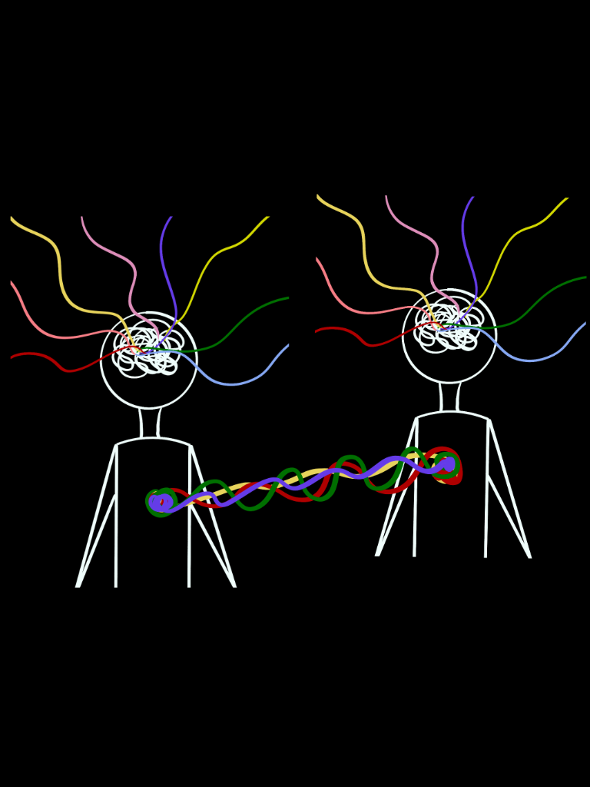

Visual Essay • Social Psychology • Empathy
Context & Interpersonal Empathy
Digital Art • 2026
Bridging Social Psychology, Cognitive Science & Visual Communication
Digital Art • 2026

A single person is the sum total of all their life experiences, environmental exposures, genetic predispositions, and many more factors. Due to this, our emotional state at any given point of time is extremely context dependent.
Since life experiences are heavily influenced by the people we interact with, it is necessary to be able to understand other people’s viewpoints in various contexts. Such an ability to imagine how another person is feeling is called empathy.
Given that empathy plays a vital role in pro-social behaviour, it is beneficial to explore whether a person’s empathy can be increased, and if yes, how?